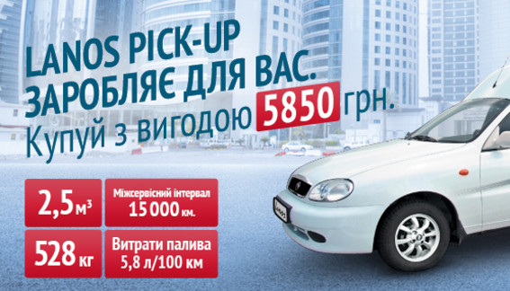

<div class="lines">
    <div id="put_parent" class="content" style="z-index: 100;">
				<div class="block_main">
																<h2>
											ЗАЗ Lanos Pick-up заробляє для Вас.  Вигода при купівлі -  5 850* грн.
																				<span> 24 липня 2014</span>
															</h2>
										<p>Комерційний автомобіль ЗАЗ Lanos Pick-up з вигодою до 5 850 грн.</p>
															<p></p>
														<p><em><strong>Комерційний автомобіль ЗАЗ Lanos Pick-up з вигодою до 5 850 грн.</strong></em></p>
						<p>З 24 липня по 31 серпня 2014 року в дилерський мережі «АвтоЗАЗ-сервіс» модель ЗАЗ Lanos Pick-Up 2013 р.в. можна придбати з вигодою до 5 850 грн.</p>
						<p>Ціна від <strong>97 110 грн</strong>.** та гідні експлуатаційні характеристики Lanos Pick - up роблять його одним з найпопулярніших фургонів на ринку легкої комерційної техніки. Автомобіль придатний для використання в щоденній роботі, як приватних підприємців, так і крупних корпорацій. Вже майже 2 500 Ланос Пікап стали надійними помічниками своїм власникам.</p>
						<p>Автомобіль, що є незамінним при перевезеннях мілкогабаритних та середньогабарітних вантажів, володіє низкою переваг:<br><em>- об'єм вантажного відсіку – 2 500 літрів;</em><br><em>- вантажопідйомність, завдяки посиленій задній підвісці – 528 кг;</em><br><em>- невелика завантажувальна висота і широкий кут відкриття дверей;</em><br><em>- витрата палива – 5,8 л. / 100 км. (при швидкості 90 км/год.)***.</em></p>
						<p>2-х дверний фургон від ЗАЗ агрегатується 1,5-літровим двигуном General Motors, норми токсичності якого відповідають стандартам Євро-4 і 5-ти - ступінчастою механічною коробкою передач.</p>
						<p>Виробник піклується і про безпеку тих, хто працює на цьому автомобілі як водій:<br><em>- подушка безпеки водія (у комплектаціях «комфорт» та «люкс»);</em><br><em>- поперечний брус, що захищає від бічного удару;</em><br><em>- інерційні ремені безпеки і індикатор не пристебнутого ременя;</em><br><em>- повторювачі поворотів на зовнішніх дзеркалах; дзеркала з підігрівом.</em></p>
						<p>Оснащення автомобіля кондиціонером додає комфорту, а радіопідготовка (2 динаміки і антена) дозволяє в процесі експлуатації доукомплектувати автомобіль «музикою». Крім того, модель може бути оснащена газобалонним устаткуванням, що дозволить власникові заощадити, враховуючи ціни на бензин. Ціна <strong>Ланос пікап</strong> 2013 р. в. з ГБО складає від <strong>106 470</strong> грн**.</p>
						<p><span style="font-size: x-small;">* Наведена різниця між вартістю автомобіля ЗАЗ Lanos Pick-up D2ММ51021 2013 і 2014 роки випуску.</span><br><span style="font-size: x-small;">**Ціни наведені станом на 24.07.2014 згідно реєстру цін, що діє.</span><br><span style="font-size: x-small;">***Розрахунок витрат пального наведений для швидкості 90 км/год, витрати палива можуть змінюватися в залежності від характеру управління автомобілем і умов експлуатації.</span></p>
				</div>
		</div>
</div>   
